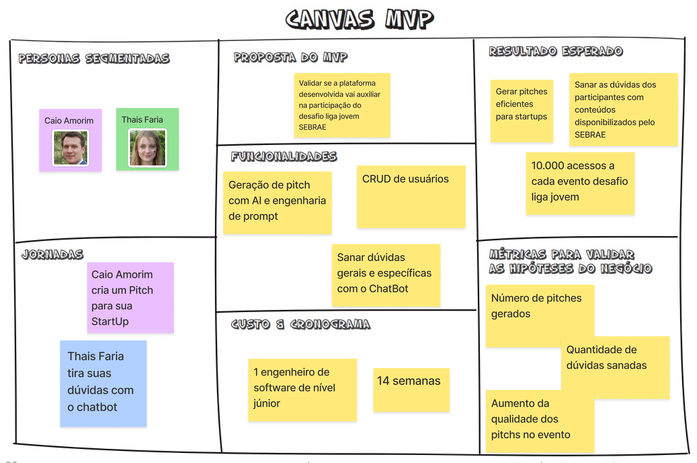
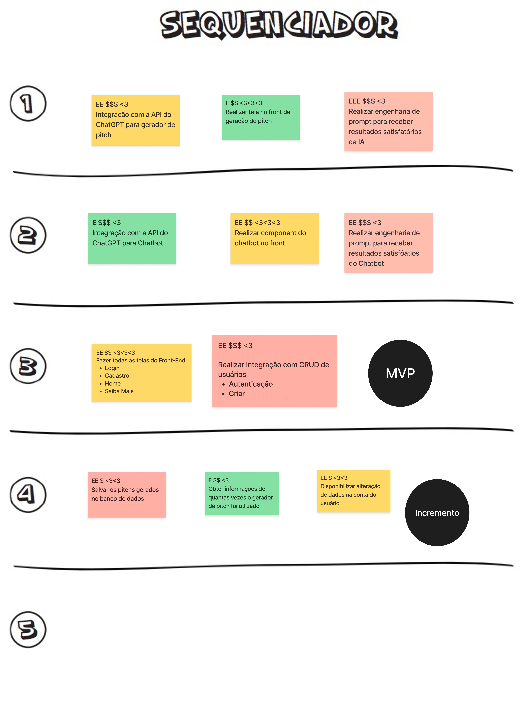

Canvas MVP
Abaixo temos a imagem do Canvas MVP desenvolvido pelos integrantes da equipe para o projeto

O Canvas MVP (Minimum Viable Product) é uma ferramenta visual que auxilia na organização e priorização dos elementos essenciais de um produto mínimo viável. Ele ajuda a definir os componentes mais importantes do MVP para validação rápida e eficiente com os clientes-alvo.
Seções do Canvas MVP
O Canvas MVP é composto pelas seguintes seções personalizadas:
- Personas Segmentadas: Identificar os perfis de usuários-alvo que você pretende atingir com o MVP. Determinar suas necessidades, dores e comportamentos relevantes para o produto.
- Jornadas: Descrever as jornadas dos usuários-alvo ao interagir com o produto, desde o início até a conclusão de suas tarefas ou objetivos.
- Proposta do MVP: Definir a proposta de valor específica que o MVP oferece ao mercado e aos usuários-alvo.
- Funcionalidades: Listar as funcionalidades essenciais do MVP que permitirão validar as hipóteses de negócio com os clientes.
- Custo e Cronograma: Identificar os custos estimados para o desenvolvimento do MVP e estabeleça um cronograma com marcos importantes para o projeto.
- Resultado Esperado: Descrever os resultados esperados com a implementação e validação do MVP, como feedback dos clientes, métricas de uso, entre outros.
- Métricas para Validar as Hipóteses do Negócio: Determinar as métricas que serão usadas para validar as hipóteses de negócio e avaliar o sucesso do MVP.
Sequenciador
Abaixo temos a imagem do sequenciador desenvolvido pelos integrantes da equipe para o projeto

Histórico de Revisão
| Data | Versão | Descrição | Autor |
|---|---|---|---|
| 25/06/2024 | 1.0 | Criação do documento | Lucas Lima Ferraz |